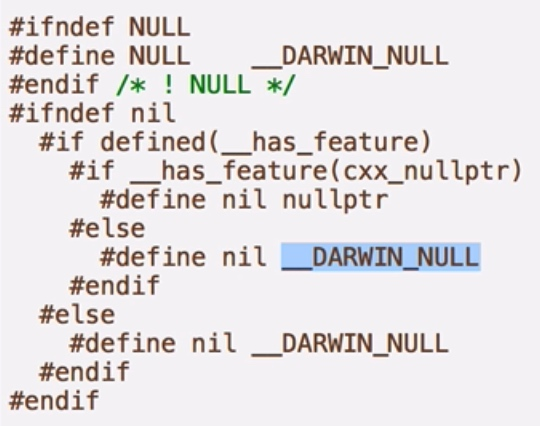
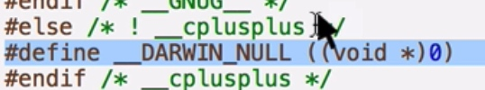
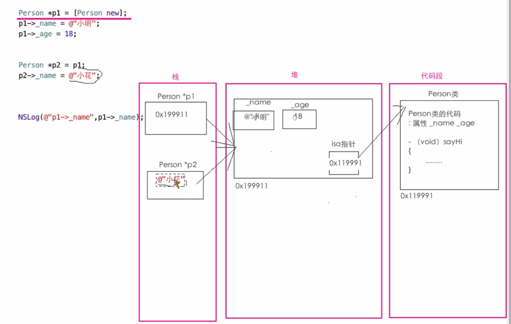

NULL
- NULL可以作为指针变量的值；
- 如果一个指针变量的值是NULL值代表这个指针不指向内存中的任何一个空间；
- NULL 其实是一个宏
#define NULL ((void *)0)
nil
- nil只能作为指针变量的值，代表指针变量不指向内存中的任何一个空间；
- nil也是一个宏；
- NULL和nil其实是一样的；


- 一般C指针用NULL，OC的类指针用nil；
如果一个类指针的值为nil，那么通过指针去访问该指针指向的对象的属性，运行会报错；
该指针去访问指针指向的对象的方法，运行不会报错，但是不会去执行；
